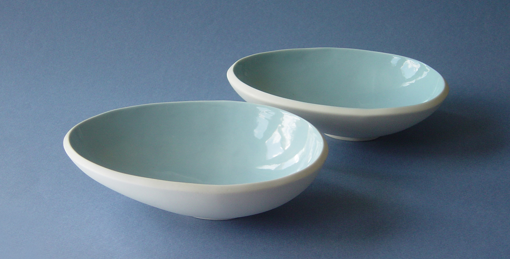

You can commission any of the pieces marked (commission only) on the gallery pages. However, I would be delighted to discuss any project or object you might have in mind.
Please note that most of my ceramics are not cast but individually hand-made and, therefore, may take several weeks to produce.
Italo Manrique
Tel: +44 (0)20 8699 5574
Email: ceramics@italomanrique.co.uk
Graphic design: Chris Drake Design
Webmaster: Oscar Manrique (Ver 4.0 July 2018)
Objects and photographs © Italo Manrique 2018